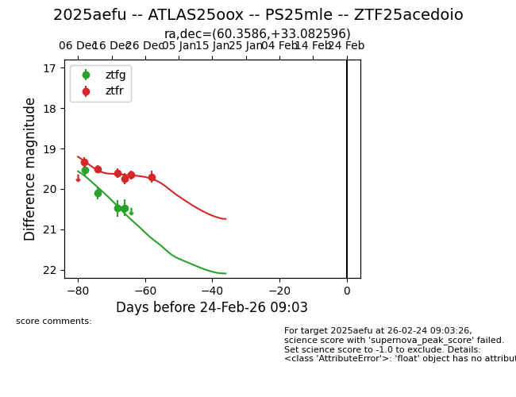
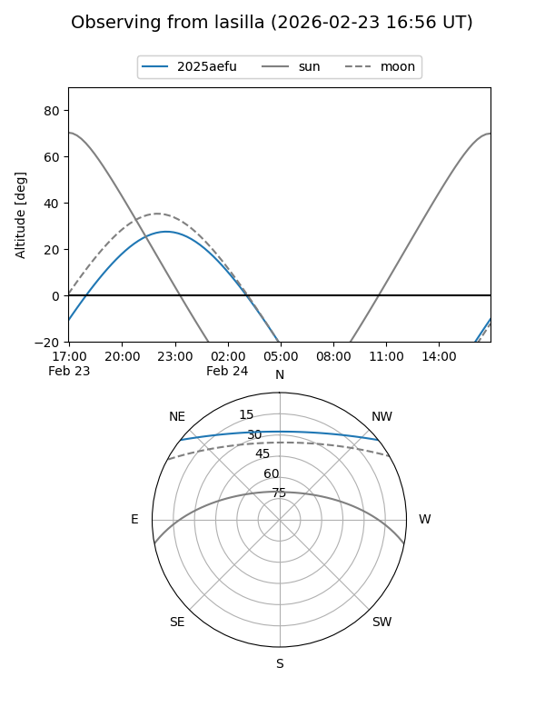
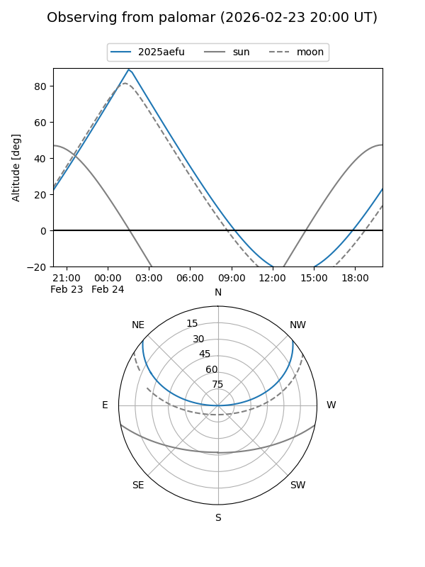
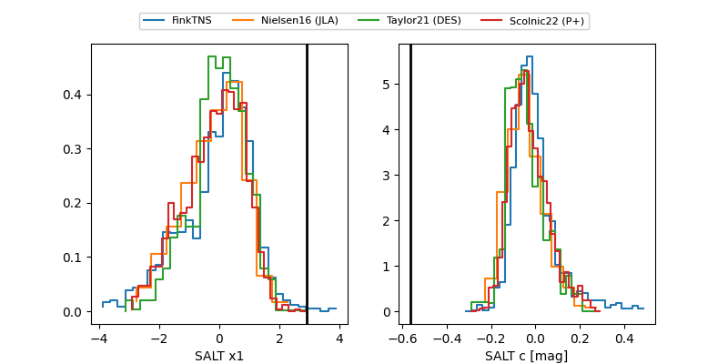

2025aefu
Target 2025aefu at 2025-12-18 11:32
Aliases and brokers:
FINK: fink-portal.org/ZTF25acedoio
Lasair: lasair-ztf.lsst.ac.uk/objects/ZTF25acedoio
ALeRCE: alerce.online/object/ZTF25acedoio
TNS: wis-tns.org/object/2025aefu
YSE: ziggy.ucolick.org/yse/transient_detail/2025aefu
alt names
ZTF25acedoio (ztf,fink_ztf)
2025aefu (tns,yse)
ATLAS25oox (atlas)
Coordinates:
equatorial (ra, dec) = 60.3587,+33.08266
equatorial (HMS+DMS) = 04:01:26.09,+33:04:57.58
galactic (l, b) = (162.6379,-14.76775)
Photometry
last ztfg=20.09, ztfr=19.61
2 ztfg, 3 ztfr detections
Lightcurve

Visibility


Additional plots
